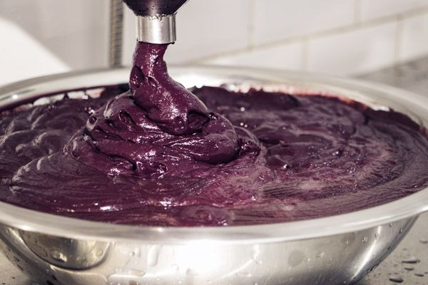

| Império do Açaí | Início |
| Sobre o Sistema |
|
O que é o Império do Açaí? A Império do Açaí da Amazônia é um sistema web desenvolvido para apoiar produtores, cooperativas e distribuidores de açaí da região do Baixo Amazonas, no estado do Pará. A plataforma permite o cadastro de produtores, o registro de lotes de produção e o acompanhamento completo do ciclo produtivo — da coleta até a entrega ao comprador final. |
Público-alvo O sistema atende produtores familiares e cooperativados dos municípios de Santarém, Óbidos, Oriximiná, Juruti, Alenquer e Monte Alegre. Também é voltado para gestores de cooperativas agrícolas e compradores que desejam rastrear a origem e a qualidade do açaí adquirido diretamente da Amazônia Paraense. |
| O que você encontra aqui |
|
📦 Cadastro de Produtores Registre produtores com dados completos sobre sua propriedade, localização, tipo de produção e informações de contato. Acessar Cadastro → |
📊 Painel de Controle Acompanhe os principais indicadores da produção, lotes registrados e movimentações recentes em tempo real. Acessar Painel → |
📋 Relatórios Consulte relatórios detalhados de produção por município, período e status de entrega dos lotes cadastrados. Acessar Relatórios → |
| A Amazônia que nos inspira |
|
Floresta Amazônica Berço do açaí e de toda a riqueza natural do Pará. |
 Produção de Açaí Do campo à mesa, rastreado e valorizado pela Império do Açaí. |
|
Pronto para começar? Acesse o sistema e faça parte da rede de produtores do Baixo Amazonas. |
| © 2025 Imperio do Açaí | Sistema de Rastreamento da Produção de Açaí | Baixo Amazonas, Pará |